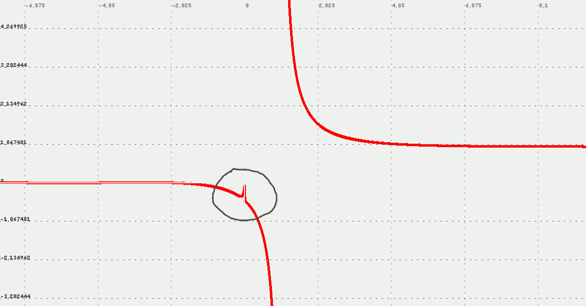

Descripción
Función Zeta de Riemann para valores reales o complejos.
Esta función podría sufrir modificaciones y optimizaciones. Los valores para pocas iteraciones son algo inexactos, especialmente para valores cercanos a 0 por la izquierda y a 1 (ver gráfica abajo)
Cadena de entrada
zeta
Cadena de salida
ζ
Uso
zeta(<punto>[,<iter>])
| Parámetros | |||
|---|---|---|---|
| # | Parámetro | Descripción | Valor por defecto |
| 1 | punto | Punto de evaluación, número real o complejo | |
| 2 | iter | Número de iteraciones | 1000 |
Ejemplos
zeta(1.5)
RealDoble: 2.606910932296504
zeta(1.5,1e4)
RealDoble: 2.611164977528103
sqrt(6zeta(2))
RealDoble: 3.141592638842271
sqrt(6zeta(2,1e4))
RealDoble: 3.1415926521150337
zeta(1)
RealDoble: Infinity
zeta(0)
RealDoble: -0.5
zeta(-1)
RealDoble: -0.08333333255095303
zeta(-2)
RealDoble: 0
zeta(-2-3ui)
Complejo: 0.13297115596068682-0.12305330043570077I
zeta(x,1e4)
Salida JGE:  (obsérvese que los valores cercanos a 0 producen una discontinuidad por inexactitud en esa región)
Desde / Última modificación
v0.4.8